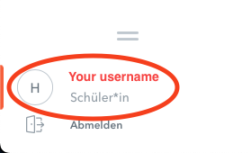
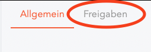
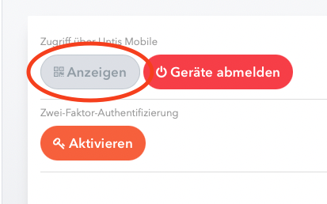
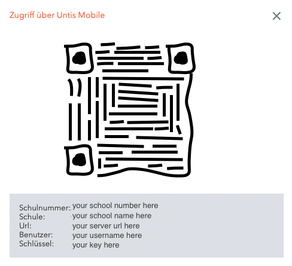

Don't know your password?
Solution 1
You can ask your school administrator to give you your WebUntis password.
Solution 2
You can implement WebUntis QR-code authentication into this website your self.
Here the link for the related
GitHub issue: https://github.com/dein-ding/webuntis-utils/issues/18
This would enable the following login workflows:
- Go to the webuntis dashboard
-
Click on your username

-
Switch to the next tab

-
Click this button to reveal the data

- Do one of the following:
-
Scan the QR-Code and copy the decoded string into the input box,
which would show up here.
-
Copy/Paste all the data manually into the form that would show
up here.
